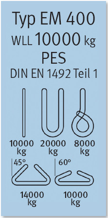
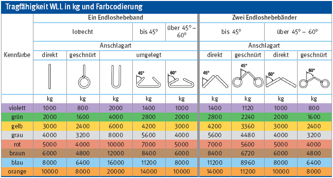

Chemiefaserhebebänder
Tragfähigkeitstabellen
|
|
- Nur mit einem Etikett gekennzeichnete Hebebänder verwenden. Auf dem Etikett ist die Tragfähigkeit für verschiedene Anschlagarten angegeben.
- Nur licht- und formstabilisierte Chemiefaserhebebänder benutzen. Hebebänder aus Polyethylen sind unzulässig.
- Hebebänder für das Anschlagen im Schnürgang müssen verstärkte Endschlaufen haben.
- Hebebänder nicht über rauhe Oberflächen ziehen und nicht knoten. Gegebenenfalls Schutzüberzüge verwenden.
- Art, Umfang und Fristen erforderlicher Prüfungen festlegen (Gefährdungsbeurteilung) und einhalten, z. B.:
- arbeitstäglich auf einwandfreien Zustand,
- nach Einsatzbedingungen, mind. 1 x jährlich durch eine “zur Prüfung befähigte Person“ (z. B. Sachkundiger).
- Reparaturen nur vom Hersteller ausführen lassen.
- Hebebänder bei folgenden Schäden nicht mehr benutzen:
- Beschädigungen der Webkanten des Gewebes und der tragenden Nähte,
- Garnbrüchen in großer Zahl (>10% des Gesamtgarns),
- starken Verformungen durch Wärmeentwicklung und Wärmestrahlung,
- Schäden an der Vernähung und infolge aggressiver Stoffe.
Kennzeichnung von Chemiefaserhebebändern
(Beispiel)

Rundschlingen und endlose Chemiefaserhebebänder
nach DIN EN 1492 Teil 2 und 1

07/2015